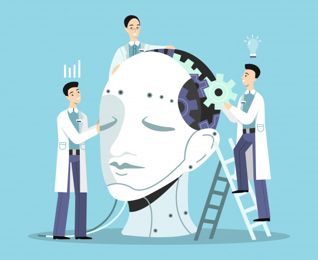
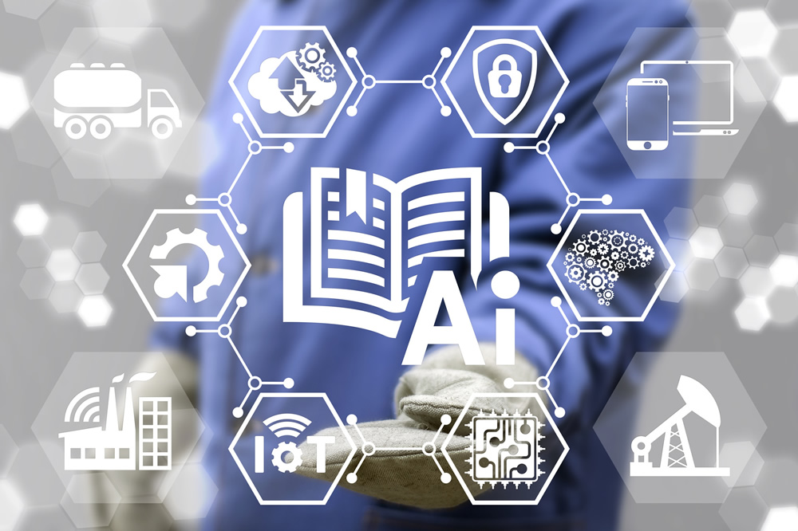
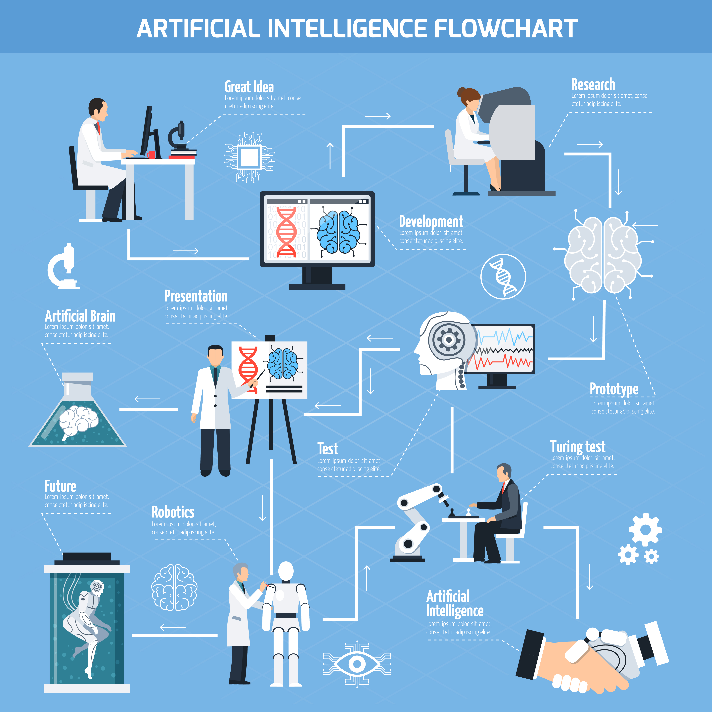
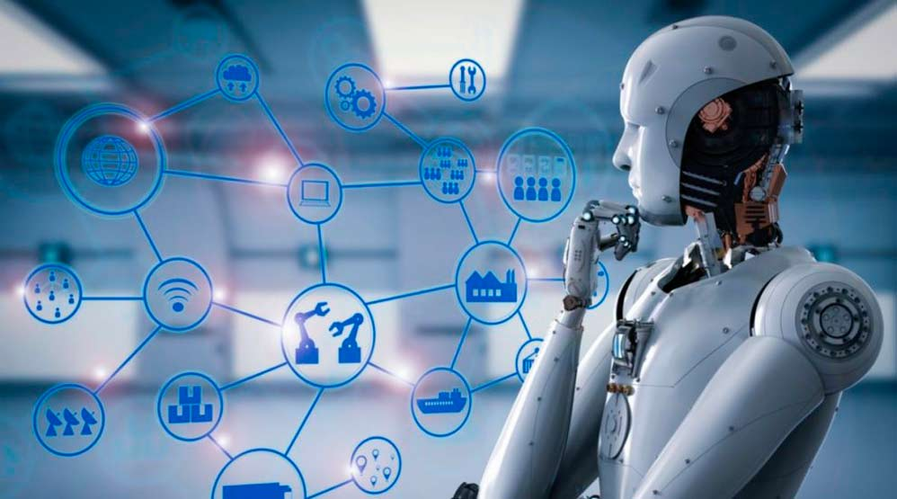
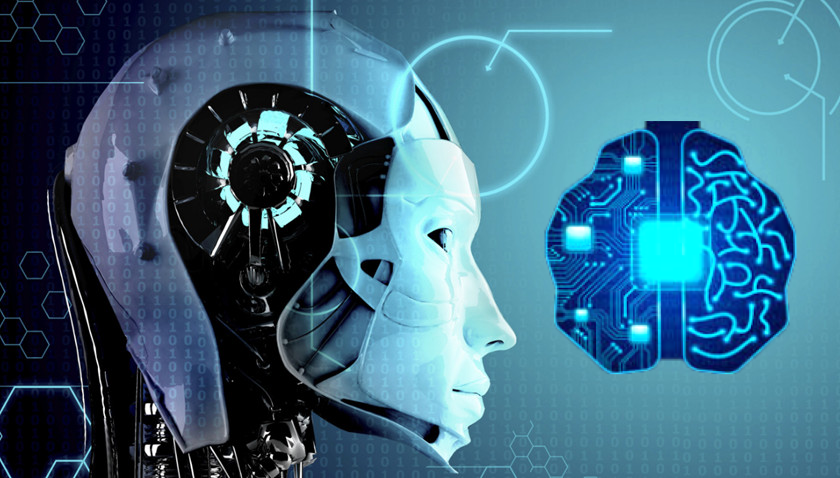

La Inteligencia Artificial es la combinación de algoritmos planteados con el propósito de crear máquinas que presenten las mismas capacidades que el ser humano.

Es la simulación de procesos de inteligencia humana por parte de máquinas, especialmente sistemas informáticos.
Estos procesos incluyen el aprendizaje (la adquisición de información y reglas para el uso de la
información) , el razonamiento (usando las reglas para
llegar a conclusiones aproximadas o definitivas) y la autocorrección.
Historia.

El término AI fue acuñado por John McCarthy , un informático estadounidense,
en 1956 durante la Conferencia de Dartmouth , donde nació la disciplina.
Hoy en día, es un término general que abarca todo, desde la automatización de procesos robóticos hasta la robótica actual.
Ha ganado prominencia recientemente debido, en parte, a los grandes volúmenes de datos,
o al aumento de velocidad, tamaño y variedad de datos que las empresas están recopilando.
AI puede realizar tareas tales como identificar patrones en los datos de manera más eficiente que los seres humanos,
lo que permite a las empresas obtener más información sobre sus datos.
Tipos de Inteligencia Artificial
Los expertos en ciencias de la computación Stuart Russell y Peter Norvig diferencian varios tipos de inteligencia artificial:
Sistemas que piensan como humanos:
Automatizan actividades como la toma de decisiones, la resolución de problemas y el aprendizaje.
Un ejemplo son las redes neuronales artificiales.
Sistemas que actúan como humanos:
Se trata de computadoras que realizan tareas de forma similar a como lo hacen las personas.
Es el caso de los robots.
Sistemas que piensan racionalmente:
Intentan emular el pensamiento lógico racional de los humanos, es decir, se investiga cómo lograr que las
máquinas puedan percibir, razonar y actuar en consecuencia.
Los sistemas expertos se engloban en este grupo.
Sistemas que actúan racionalmente:
Idealmente, son aquellos que tratan de imitar de manera racional el comportamiento humano, como los agentes inteligentes.
Aplicaciones Practicas De La Inteligencia Artificial
La IA está presente en la detección facial de los móviles, en los asistentes virtuales
de voz como Siri de Apple,
Alexa de Amazon o Cortana de Microsoft y está integrada en nuestros dispositivos cotidianos a través de bots
(abreviatura de robots) o aplicaciones para móvil, tales como:

- LyliEnlace externo, se abre en ventana nueva, un personal shopper en versión digital.
- ParlaEnlace externo, se abre en ventana nueva, concebida para ayudarnos con el aprendizaje de idiomas.
- EmsEnlace externo, se abre en ventana nueva, diseñada para hacernos un poco más llevadera la ardua tarea de encontrar nuevo piso.
- GyantEnlace externo, se abre en ventana nueva, un asistente virtual de Facebook que emite 'diagnósticos' médicos.
El objetivo de todas ellas: "Hacer más fácil la vida de las personas."
LAS SEIS LEYES DE LA ROBÓTICA PROPUESTAS POR EL PARLAMENTO EUROPEO
Esta vertiginosa irrupción de la IA y de la robótica en nuestra sociedad ha llevado a los organismos internacionales a plantearse la necesidad de crear una normativa para regular su uso y empleo y evitar, de este modo, posibles problemáticas que puedan surgir en el futuro.

- Los robots deberán contar con un interruptor de emergencia para evitar cualquier situación de peligro.
- No podrán hacer daño a los seres humanos.
La robótica está expresamente concebida para ayudar y proteger a las personas. - No podrán generarse relaciones emocionales.
- Será obligatoria la contratación de un seguro destinado a las máquinas de mayor envergadura.
Ante cualquier daño material, serán los dueños quienes asuman los costes. - Sus derechos y obligaciones serán clasificados legalmente.
- Las máquinas tributarán a la seguridad social.
Su entrada en el mercado laboral impactará sobre la mano de obra de muchas empresas.
Los robots deberán pagar impuestos para subvencionar las ayudas de los desempleados.
Conclusion.

La ROBÓTICA y La INTELIGENCIA ARTIFICIAL, ambas tecnologías ya están cambiando el mundo y las cifras son la mejor muestra de ello: la consultora estadounidense Gartner predice que para el año 2020 el 85% de la interacción con los clientes
será gestionada por IA y, en conjunto, se estima que el mercado de la IA pueda llegar a representar 127.000 millones de dólares en 2025, cifra muy superior a los 2.000 millones de 2015.
Estados Unidos y China se situarán a la cabeza en inversiones.
Y aunque haya voces como la del filósofo sueco de la Universidad de Oxford, Nick Bostrom, que anticipa que "existe un 90% de posibilidades de que entre 2075 y 2090 haya máquinas tan inteligentes como los humanos", o la de Stephen Hawking, que aventura que las máquinas superarán completamente a los humanos en menos de 100 años, lo cierto es que lejos de convertirnos en obsoletos, la IA nos hará más eficientes y nos permitirá ejecutar acciones que nunca hubiéramos podido realizar debido a su complejidad. 